The ultimate Peloton companion.
If you own a Peloton Bike, Tread, Rower or you use the Peloton App on your own equipment, you need this App!
mPaceline Pulse is the ultimate companion for Peloton App users and Peloton Equipment owners alike.
See your live stats — cadence, resistance, speed, pace, incline, and stroke rate — displayed alongside on-screen instructor cues as your class progresses. Power Zone athlete? Enter your FTP to unlock precise Power Zone graphs and see exactly which zone you’re training in, moment by moment.
mPaceline Pulse also integrates seamlessly with Apple Health, automatically saving every workout and updating your Activity Rings — so your progress is always up to date, wherever you train.
Looking for the original mPaceline app? Read what happened to it.
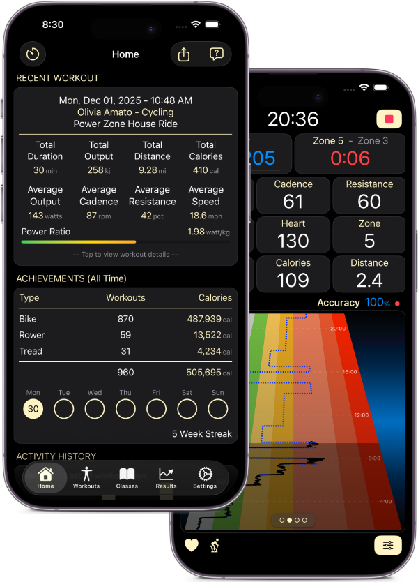
About mPaceline Pulse
mPaceline is a cycling, running and rowing workout App designed to help you visualize your results over time. The App works best if your focus is on taking spinning or running classes that provide metrics on your class performance. It’s primarily focused on individuals that own a Peloton Bike, Tread or a 3rd party equipment owners that utilize the Peloton App. However, if you have Power or Cadence meters on an outdoor bike, mPaceline will work equally well.
Live Stats
See live Heart Rate and Power metrics as you ride. mPaceline can connect to a number of Bluetooth Peripherals to show you live data.
Visualize Your Results
The power of mPaceline is that it helps you demonstrate that your ride performance is improving. View a number of charts and graphs to show that you are getting stronger.
Connect with Peloton
mPaceline is a great Peloton Companion! When your ride is complete, mPaceline will pull additional stats and data from Peloton to give you a complete picture of your ride performance.
Why mPaceline Pulse? Three Key Benefits
Visuals That Prove Progress
You put in the work—mPaceline helps you see the payoff.
mPaceline focuses on turning your workouts into meaningful, easy-to-understand insights. Instead of relying on isolated stats from individual classes, the app connects your training over time and shows clear trends in both physical and cardiovascular performance.
Through unique reports and visualizations not available on the Peloton platform, you can:
- Track measurable improvements in fitness, fatigue, and recovery
- See progress numerically and graphically
- Understand how consistency translates into real gains
These visuals help validate your effort and reinforce that your Peloton subscription—and your time—is delivering real results.
Better Class Awareness & Direction
One of mPaceline’s standout features is how it helps you understand where you are in a class—and where you’re headed next.
During workouts, Peloton shows what you should be doing right now (cadence, resistance, speed, etc.). mPaceline goes further by visualizing the structure of the class itself. You can see:
- The current phase of the workout
- What’s coming up in the next few minutes
- When to push harder—and when relief or recovery is approaching
This forward-looking context helps you pace yourself mentally and physically, making tough efforts feel more manageable and intentional.
That same clarity extends to class selection. While browsing Peloton classes, mPaceline visually breaks down:
- Class structure
- Cadence and resistance ranges
- Estimated effort and intensity
Whether you’re looking to go all-out or intentionally choosing a lighter day, mPaceline helps you pick the right class before you hit start.
Motivation Through Consistency
Motivation isn’t just about intensity—it’s about showing up consistently.
mPaceline Pulse includes features designed to encourage steady, sustainable progress:
- Workout streaks and calendars
- Cumulative goals like total minutes or distance
- Visual reminders of your consistency over time
Sometimes motivation comes from a big performance win. Other times, it’s simply checking the box and keeping the streak alive. mPaceline supports both, helping you stay engaged even on days when motivation is harder to find.
Sample App Screens
A quick look at mPaceline Pulse on iPhone.
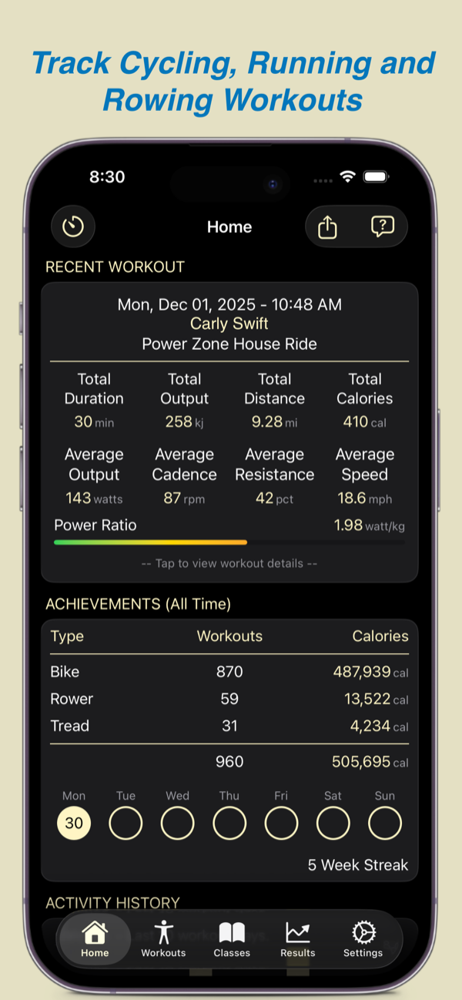
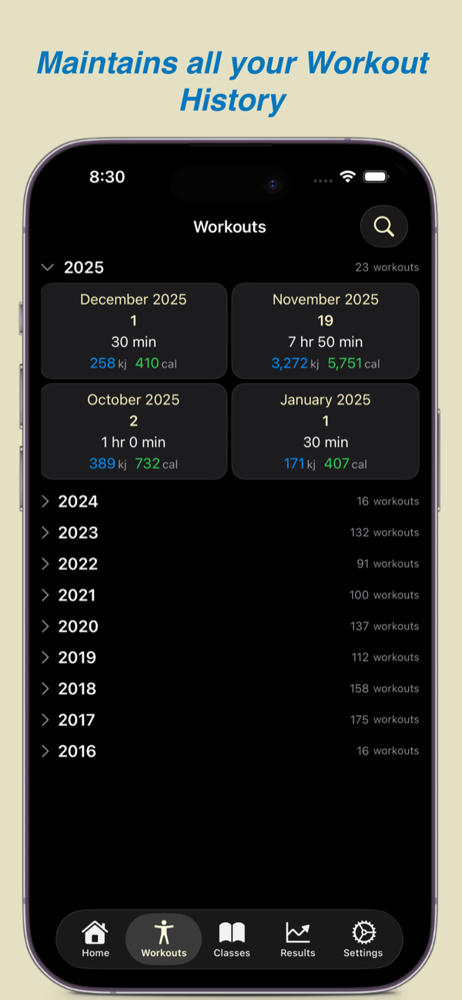
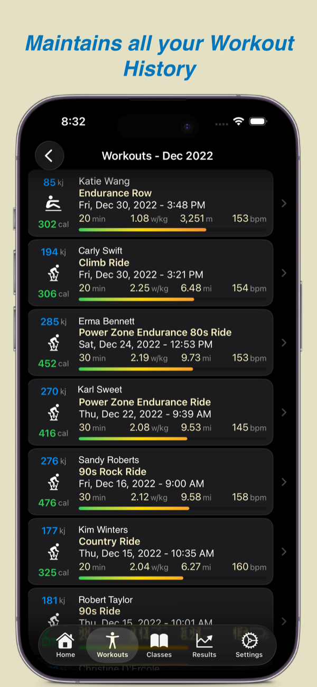
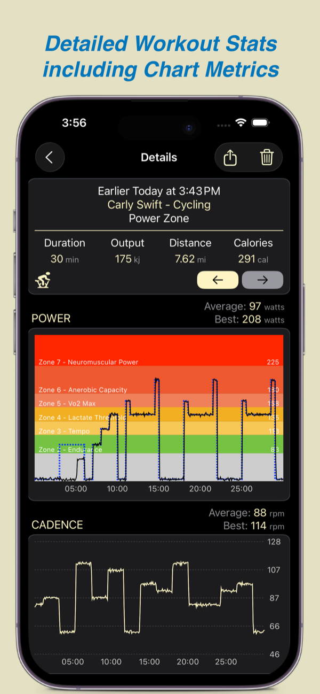
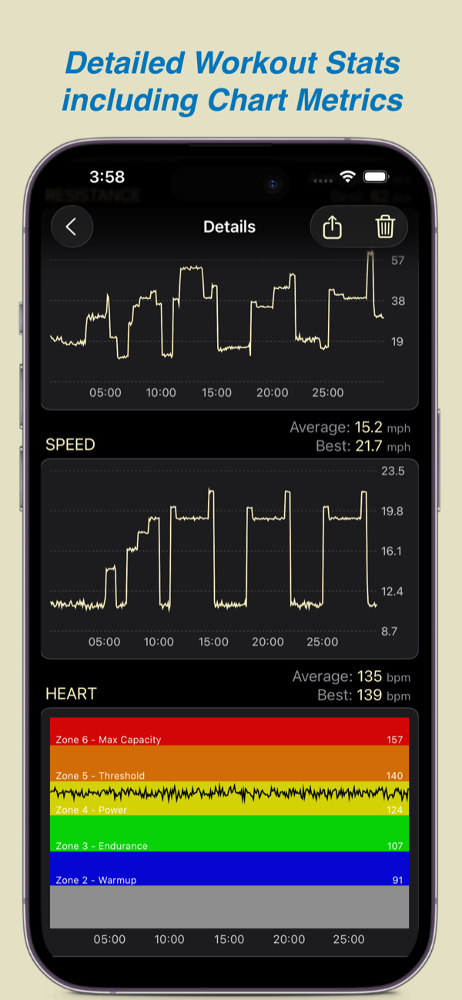
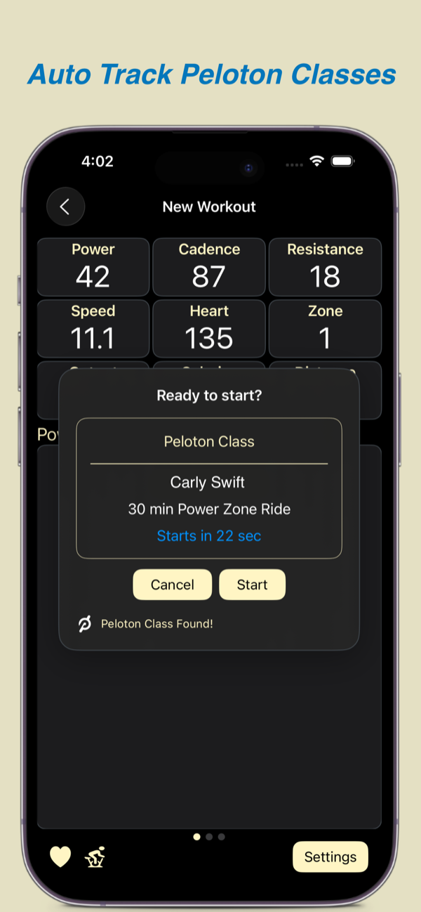
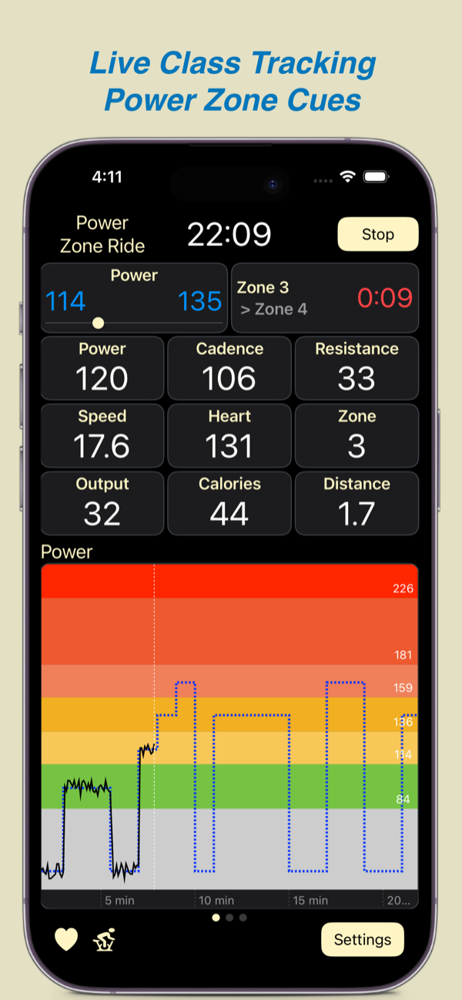
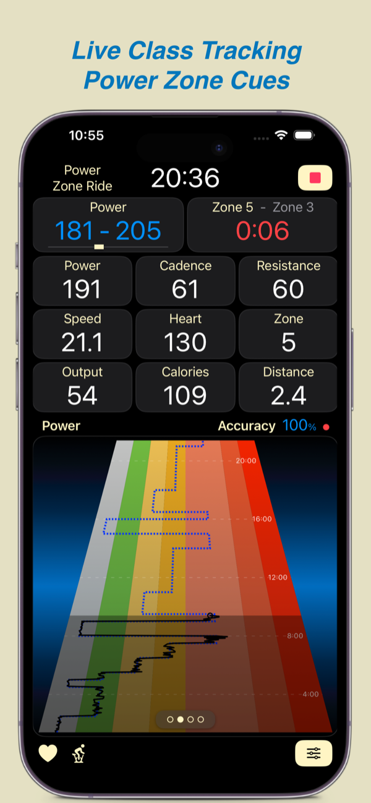
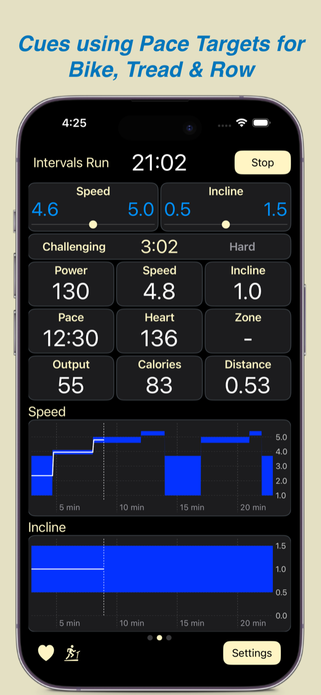
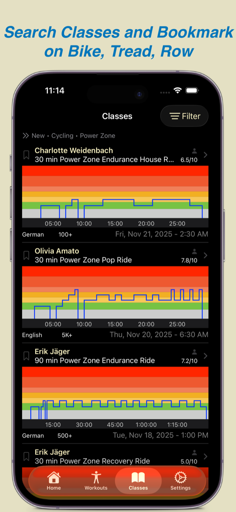
Our Testimonials
What folks are saying about us…
Exceptional
PZ Rider ★★★★★
I am an avid peloton power zone rider who uses a Keiser bike. This app is exceptional in linking to my Keiser and peloton to create an accurate / well rounded workout experience. The training details are just what the serious athlete wants! Not to forget the amazing quick service this app provides with questions I have sent in. Amazing app and quiet with the price.
Data For Days
JMC5455 ★★★★★
The analytics just keep getting better and better! I was hesitant to switch over to the new app, but man does it deliver. The team is constantly looking for ways to improve user experience and truly care for what we want to see. Excited to see what they come up with next!
Great App
Bardee ★★★★★
This is the app I use to track all my workouts in one place. Peloton classes, indoor cycling, outdoor cycling, walking, running, hiking, weights and fitness classes in the gym…you name it. I can download the metrics from my workouts into this app and track them without having to wade through a lot of bloat (looking at you, Strava!) The developer is very responsive, and this app has grown and evolved very quickly in a short amount of time. I am a happy camper.
It’s Great!
TxTechGirl91 ★★★★★
This app is perfect for use with my power zone rides. The developer is always updating and quick to respond to questions I had.
What a Great App!
Mhmks ★★★★★
Streamlined integration to use IC4. New features constantly releasing!
Still The Best for Peloton Graphs
BKNYWill ★★★★★
Look – this update was overdue. The previous auth setup was wildly insecure. Now we use proper peloton OAuth and have a dynamic sync with Peloton data automatically. I easily got a refund from Apple for the previous subscription, and am right back at home with this latest version.
Brilliant Motivator
JMarkGoodman ★★★★★
I have the app “floating” over Peloton on my iPad and it transforms the experience. I get a load of visuals, much better than anyone on a Peloton Bike will see. I really don’t think I would keep my Peloton subscription if it wasn’t for MPaceLine Pulse.
Excellent
PMAReader ★★★★★
If you haven’t taken a look at this app you are missing out. It’s an incredible extension to my Peloton experience. Can’t imagine not having it.
Give It Time
Srm1964123 ★★★★★
Poor reviews of the earlier versions are unfair, IMO. Peloton pulled the rug out from under developers and radically changed their programming interface. MPaceLine needed a full rewrite, so the earlier versions of this new app lacked the more advanced features of the old app. Meg Software seems to be restoring features at a good pace, so hang in there.
mPaceline Pulse is Free To Try

Download on the App Store and start a free 1-week Trial. Only continue if you are pleased with the App.